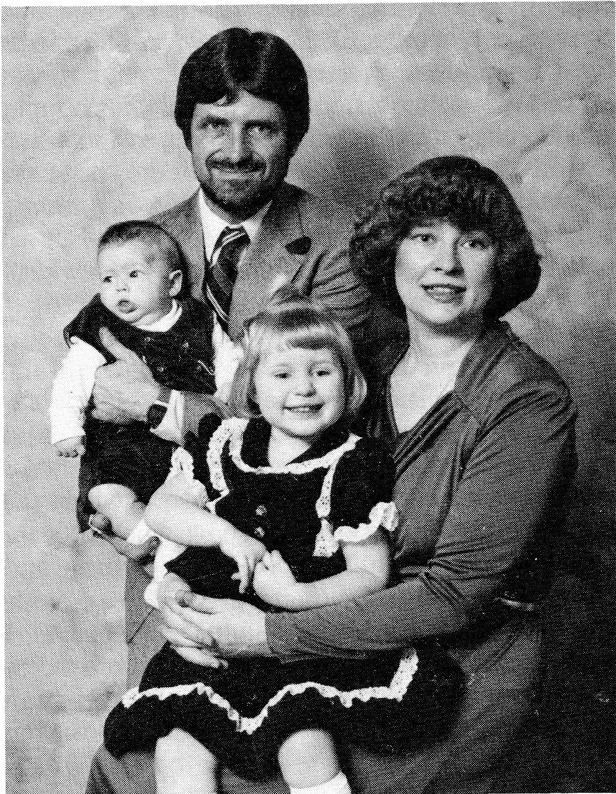
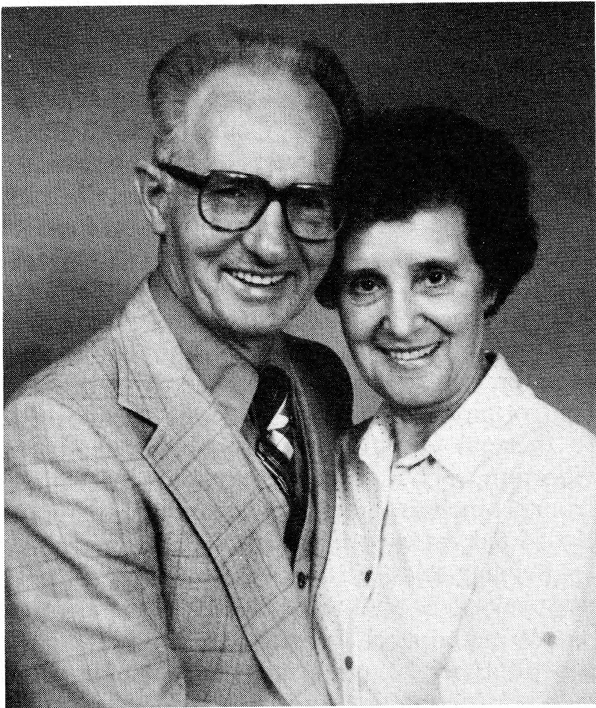
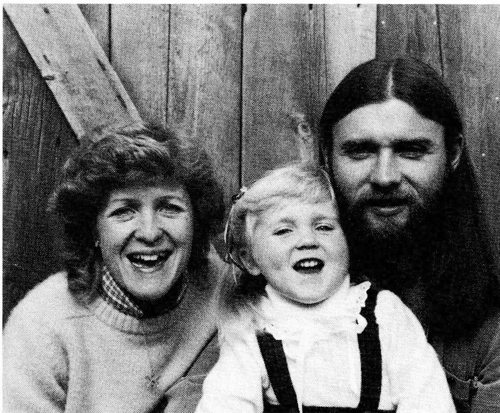
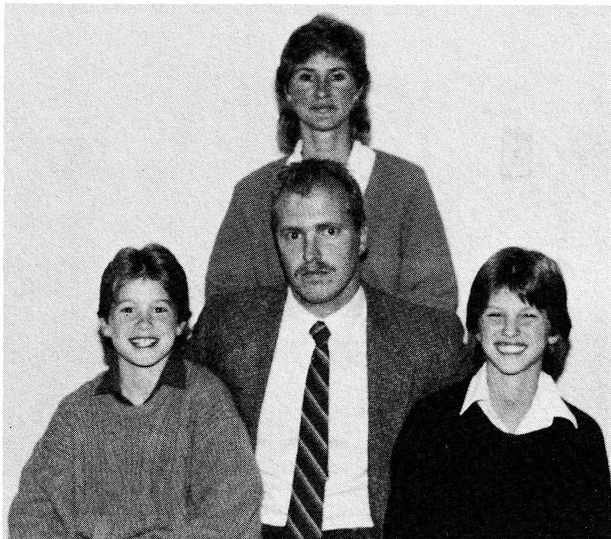
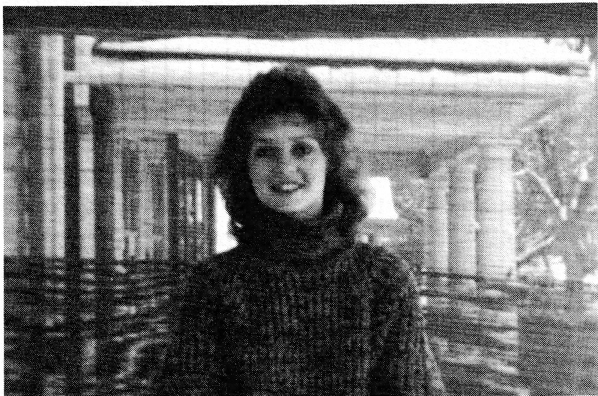
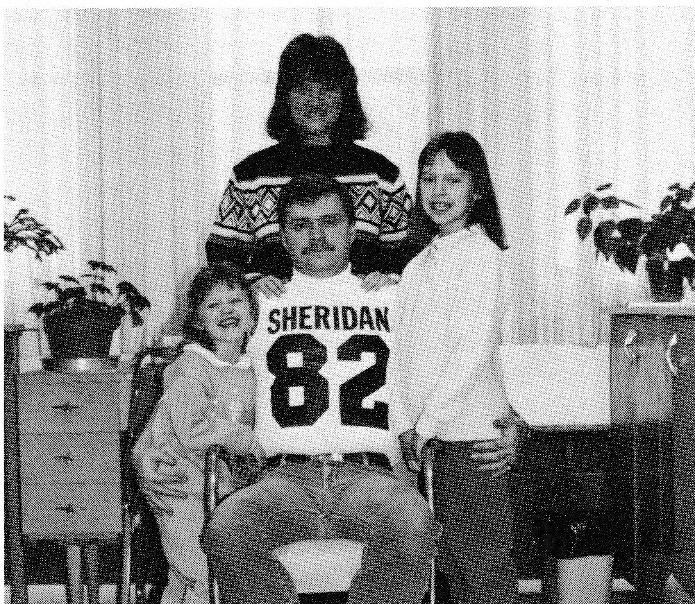
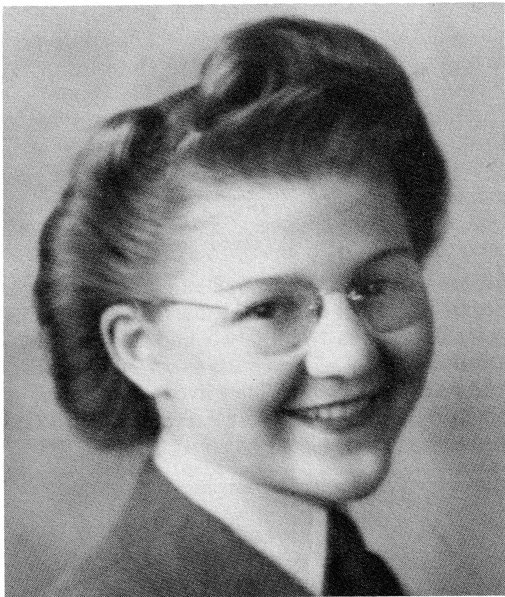
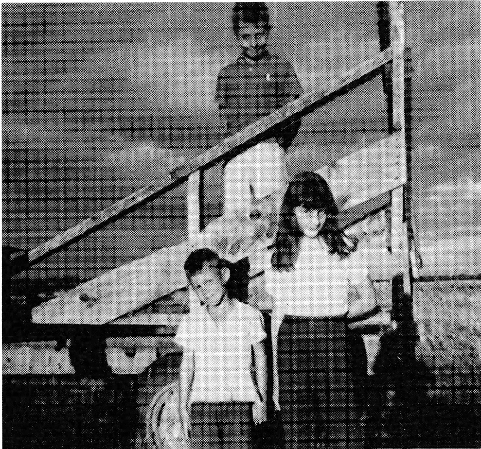
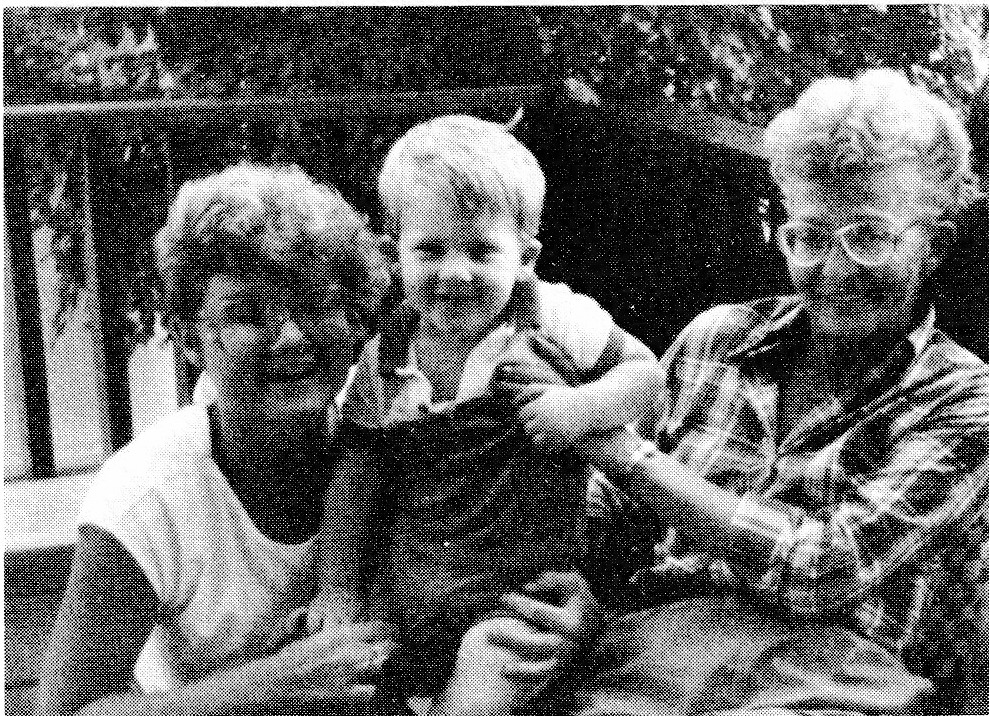

panies, due to an emergency situation, chartered a plane, came and picked me up and, after meet-ing with plant manager, engineering manager, maintenance superintendent and purchasing manager, I inspected an old expansion joint installation in a 60-inch pipeline about 60 feet above ground. After another meeting as to what we could do for them and getting their okay to proceed, they had the same charter return me home. Then, after almost 23 years, this all came to an end. And, after a few additional years in the workplace, both Helen and I retired in September 1981.
Since then we have been fortunate in having been able to elude our cold and snowy winters and fortunate in being able to visit with our four daughters and their children who are living in and around Brampton. Darlene and Tom Kirwin with daughter, Amber Skye, live in Limehouse about 25 miles west of Brampton. Susan and Terry Marks with sons, Raymond and Jason, live in Brampton. Carolanne and Bob White with daughters, Rachelle and Jasmine, live just out of Norval, about halfway between Limehouse and Brampton. Paulette is at university but lives in Brampton when at home. Paul and Anna Marie, with Sheena and Marc, have been in Winnipeg since 1983. We now call Hamilton our home, but spend a lot of time visiting around.

Our children's stories are to follow.
Paul Lessard
Paul and Anna Marie were married June 3, 1978. Their children are Sheena Mary born Janu-ary 11, 1980 and Marc Raymond born September 10, 1982.
In early October 1983, they moved to Win-nipeg where Paul is Executive Director for Man-itoba Labour Education Centre. Anna Marie works as a technician for Xerox Canada. Sheena is in Grade 2.

DARLENE (LESSARD) KIRWIN
Tom was a part-time Wilderness Survival Instructor and I was a student in his course. We hit it off right from the start. We were married on September 19, 1981 in Vancouver, B.C. in the midst of our six month tour of Canada.
After our tour we lived outside Brampton, Ontario, on a farm with our rabbits, goats, chickens, turkeys and pigs. In the midst of all this menagerie, who should enter our lives but our precious daughter, Amber-Skye. Her day is April 29, 1983.
Now, with Amber-Skye at three and a half years of age, we live in our own home right across the street from the Bruce Trail (a 700-mile hiking trail across southern Ontario). We are in the tiny hamlet of Limehouse, Halton Hills, eighteen miles from Brampton.
This summer we are building a 500 square foot addition on our home and are finding it an interesting, if not exhausting, experience. Tom works at Carlton Cards, Brampton. Yes, that is the company that sells greeting cards and wrapping paper. He enjoys his job as a maintenance craftsperson, always performing a new job every day.
I have managed to stay home with Amber-Skye by holding down three part-time jobs. Monday through Friday, I drive a school bus with Amber-Skye as the cheerful bus entertainer. Saturdays are spent working for a courier company, Purolator Courier, as a supervisor. I'm also a Childbirth Educator, teaching prenatal classes out of our home one or two evenings a week.
All in all, we are very content and happy with our lives and hope our serenity lasts for years to come.

SUSAN (LESSARD) MARKS
Terry and I were high school sweethearts and were married February 22, 1974.
In January of 1975 Terry became a member of the Royal Canadian Mounted Police and we had a brief three months stay in Regina. The rest of our time has been spent in Brampton, Ontario. Terry enjoys his work with the Mounties performing various investigations into fraud, Mafia connections and drugs.
For myself, I was able to stay home with our two children by driving a school bus and letting, first Raymond, and then Jason, act as my navigators on the bus. I also work part-time for the Liquor Control Board. With both boys in school now, I have just started working full-time as a dispatcher for the School Bus Company and am enjoying the challenge.
Raymond, born September 20, 1974, is now a twelve-year-old sportsman playing hockey and soccer, and swimming. He has an avid interest in nature and his room is a reflection of the outdoors.
Jason, born June 25, 1976, is also interested in sports, being a hockey enthusiast, primarily. Jason enjoys good adventure stories and can gobble up a good book on a lazy afternoon.
Within the next few years, Terry is hoping for a teaching job in the shooting range at the Depot. So, I guess, in time, we will know our future.

CAROLANNE (LESSARD) WHITE
It was a happy August 4, 1978, when the first granddaughter, Rachelle, was born into Joe and Helen Lessard's family.
Rachelle, my daughter, and I made a home together and were living quite happily.
While working as a librarian at Sheridan College, I met my future husband, Robert White. For Rachelle and Rob it was love at first sight. Due to technical difficulties, Rob and I could not be married right away. We made house together and were blessed with the arrival of Jasmine on June 1, 1982. Rachelle was thrilled to have a younger sister. Finally, the day came when Rob and I could wed. We were joined in matrimony in a small country church Aloa.
Rob is still at Sheridan College and has a bright future there. I have stayed at home to raise my two lovely daughters. I drove a bus for Brampton Transit this summer and am hoping to return full-time when possible.
Rachelle is a bright eight year old and is involved in Brownies. She also plays T-ball in the summer. She was awarded the "Most Sportsman Like Player" trophy in the league this summer.
Jasmine has just started Junior Kindergarten and is very industrious. She also played T-ball this summer. Her team placed first and Jasmine received her first trophy.
We are presently waiting for our first home to be built. We hope to move in by spring.

PAULETTE MARY LESSARD
- Born October 31, 1960.
- Graduated from nursing in June 1985 and was chosen as Class Valedictorian for the graduating class.
- Presently attending Brock University, in my third year of studies. My previous two years of university were taken in Nova Scotia.
- My initial goal is to obtain my Education degree. Then, using both my nursing and teaching, would like to tutor at The Hospital for Sick Children in Toronto, Ontario.
- I reside in St. Catherines, Ontario.
- Single, no dependents.

an hour so I decided to work there. However, this job meant working eleven-hour days, six days a week and, as I was only seventeen, I became very tired physically. About this time, I decided to join up as soon as I was eighteen, which I did.
I was in the Air Force for three and a half years and received 90¢ a day when I first joined up. I was stationed in Ottawa at headquarters, three different times. Other places where I was sent were Yorkton, Saskatchewan; Mountainview near Trenton, Ontario; Dunville which isn't far from Hamilton; MacDonald, Manitoba, which is close to Portage La Prairie; then back to Trenton, Ontario, which was another provincial headquarters for the Air Force at the time when I joined up. I worked as a clerk-typist in the headquarters orderly room. I had taken a typing and record keeping course in Tillsonburg - part business college, then later a two-month refresher course in the Air Force.

I think there were about 18,000 women in the Air Force. The Army had more, while the Navy had less.
When I was stationed in Yorkton, Saskatchewan, I managed to go home to the farm once. I showed up in uniform at a dance in the Veillardville hall. The Bentley girl from Etomami also was in the service.
Following my discharge, I took a hair dressing course, passed first in the class and, to this day, have never worked a day at it. It was a course paid for by the Government. Although I discovered I didn't like this kind of work, I did complete my course for, when I start something, I finish it.
Back when I was doing war work, I worked and chummed with Rita MacFarlane. I met all the MacFarlane family except for one of her brothers who was at sea. I first met Al at his parents' home in Hamilton. He had just returned from five and a half years of sea time in the Navy. Al and I were married in 1947 and proceeded to have a family. We had six children -- three boys and three girls.
There were difficult and trying times through these years. I always worked between pregnancies, mainly in sales - drugstores and department stores. Then I began the film run which meant that I travelled to different drugstores picking up their customers' films; then I shipped the films by bus to the developing studios at a plant. I picked them up one day and delivered the finished prints the following day. I started out earning $25 a week and when I quit, I was making $200 a week. I built this film run from 15 stores to about 40. I had help from my boys, Tim and Bob.
While I was doing the film run I heard about these Junior B hockey tickets that people got conned into buying. They needed to be delivered so I worked that in with my film run.
Then I worked for the Dominion Bureau of Statistics for seven years. That was a part-time job as well. That paid about $100 a month. You worked your own hours; some days I only worked three hours, some days four hours. I got mileage for the car which helped pay for the film run.
Then I started to work at Dominion Foundries and Steel. I worked three eight-hour shifts. For three years I had the three jobs going. I didn't have much time to relax, working eighteen hours a day. I had a very good housekeeper during these years. Later I began to work full-time and, at this time, I have put in twenty-one years at Dominion Foundries and Steel.
I belong to the Air Force Girls Club in Hamilton and so I see many of my old wartime friends. We have celebrated our 50th Anniversary of the Royal Canadian Air Force.
Financially, things got better for me. I think I was the first person in Ontario to get a personal bank loan without a co-signer -- as a separated woman with no other income. Many other banks had turned me down but the Bank of Nova Scotia said, "We do not give loans to women but we'll try it." I got $4,500 and I paid it off in about a year and a half. I still have the letter they sent me stating I had paid the loan off ahead of time ... "Thank you very much and if you ever need money again, contact us." It was a very nice letter. Also, I still have a letter from the head of the Dominion Bureau of Statistics. I had quit them about three times but they kept sending me the work because I worked a lot with foreign people and they couldn't get women to do this who enjoyed it. I knew twelve women in Hamilton who started and quit. I was the only one (that I knew) who ever got a letter from the Dominion Bureau of Statistics.
Living in Veillardville as a little girl, I walked three miles from the north place to school. Mae and I rode a horse in the spring when it was flooding. The water must have been up to my chin. We left the horse across the road in the barn at Mr. and Mrs. Alain's. Paul Alain would clean up the manure for me but wouldn't for Piolats which made them so mad.
My first teacher was Nellie Barteluk. She had forty plus children up to grade eight. One teacher's name was Mr. Roy, another's was Arthur Villeneuve and my last was Phillippe Le Scelleur. I remember the Christmas concerts as being really good ones. Mom used to make a lot of the costumes.
My mother made a living for herself and her children by taking in sewing, and selling cream and eggs. I remember one day Joe and I getting a good licking because we were behind the barn making mud pies in our stepfather's snuff boxes and putting real eggs in the mud pies.
My own father died seven months before I was born. My mother married Louis Strasser whom I called Dad. I knew his sons. The oldest one was Albert; he stayed with me while he got his grade thirteen. He then joined the Air Force. His flying career lasted only three or four years; then he was killed in action. Louis had another son, Michael, who was accidently killed in a stone quarry.
When Brenda, my youngest, was two years of age, I experienced difficult times. Finally, I left Al. There was a lot of hard work supporting and caring for six children. Gradually things got better. Then I was left a sum of money from an aunt of Al's and when I received it, it provided us with a real boost and I've never looked back.

Bob, my oldest child, was born on our first wedding anniversary in 1948. He stayed at home while he went to university. He got his M.A. and he now works for the Province of Ontario teaching mentally retarded adults. His wife, Diane, is a French and English teacher. They reside in Toronto, Ontario.
My second child, Pamela, married Tim Fell and they have two children: Michelle, born in 1968 and Maxwell, born in 1973. They are separated and Pam lives in Vancouver, B.C.
My third – a son – Ross, is single as is Theresa. Stuart is in sales and is not married. The youngest, Brenda, is twenty-two and is married to Dwaine Wright. They have a son, Kristopher, and a little girl, Sarah. They live in Vancouver as do Ross, Theresa and Stuart. Al is also in Vancouver.
